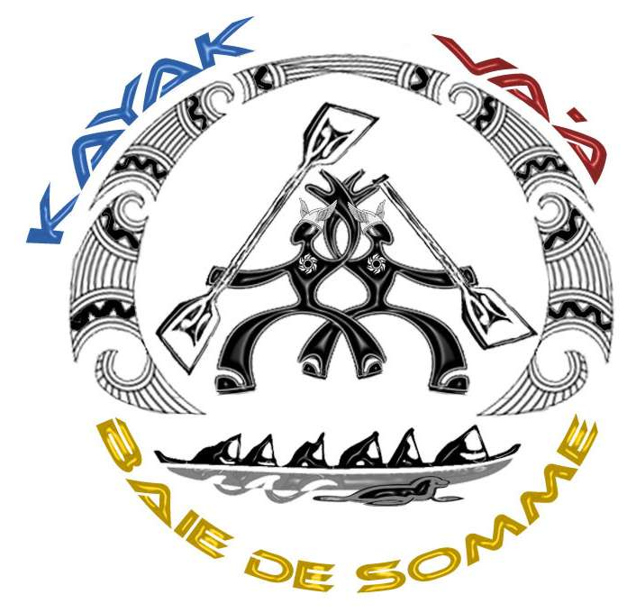
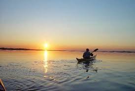

L'Association "La Baie des Phoques" propose d'embarquer en kayak de mer ou sur un paddle pour découvrir la Baie de Somme, contempler la faune et la flore de la manière la plus douce et la plus respectueuse pour l'environnement. Cette visite s’adresse aussi bien au néophyte qu’au kayakiste averti, ces excursions sont accessibles au plus grand nombre.

